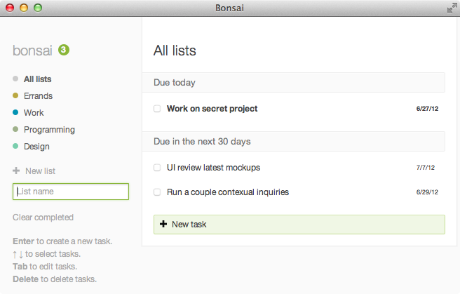

Bonsai
Web App

There are so many to-do list applications these days, but I haven't found one that really suits me.
My dream to-do list application has:
- Complete keyboard accessibility
- Some sort of grouping functionality, allowing multiple separate lists
- Due date support with smart interpretation of date strings ("Fri", "tom", "5/27", etc.) and sub-groups based around date ranges
- Accessibility across devices
- A simple, minimal interface that includes these things and not much else
I found the first three points (especially keyboard support!) pretty well-supported in The Hit List, the closest I've found to my ideal to-do list. But besides being costly, it's still overkill for my use. So I built my own to-do list as a web application.
Technology
Bonsai was built with Backbone.js, which allows task data to be easily bonded to the elements displayed on the page. I also took advantage of Datejs, a JavaScript libary for interpreting date strings.
Roles
Ideation & vision
Visual design
Interaction design
Front-end development
Back-end development